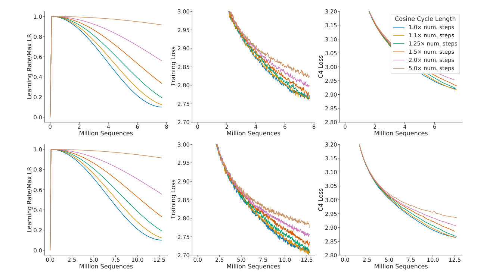
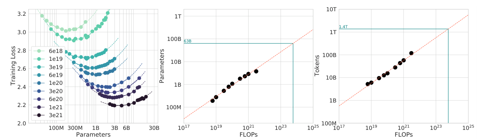
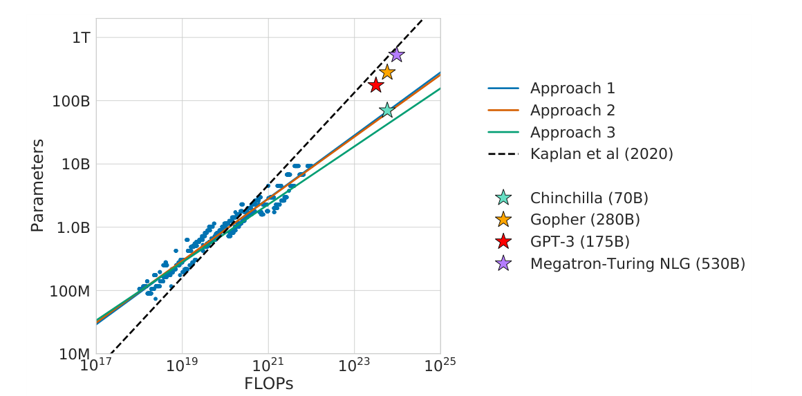

一笔算力，该多花在模型上，还是数据上
Hoffmann 等人 2022 年在 DeepMind 写的《Training Compute-Optimal Large Language Models》，模型就叫 Chinchilla。它问的是：训练算力固定时，模型参数和训练数据该怎么分？作者训练了 400 多个模型，用三种互相独立的方法重新测了一遍，答案是两者等比例增长：模型每大一倍，数据也该多一倍。009 的答案是把算力主要花在做大模型上，当时的大模型也照这个做。作者按新答案训练了 700 亿参数、1.4 万亿 token 的 Chinchilla，花的算力和 2800 亿参数的 Gopher 在同一量级，在 MMLU 等几乎所有评测上都赢了它。结论是：当时的大模型普遍太大、训得太少。
1要解决的问题
训练一个大模型，要先定两个数：模型有多少参数 N，喂多少 token D。训练花的算力大约是 C ≈ 6·N·D（精确写法见附录 A 式 1）。算力是事先定好的预算，所以 N 和 D 是一块跷跷板：模型大，就见得少；模型小，就见得多。
当时的做法：算力多了，主要拿去把模型做大
009 测出的分法是：算力涨到 10 倍，模型涨约 5.5 倍，数据只涨约 1.8 倍。业界照着做。GPT-3、Jurassic、Gopher、MT-NLG 的参数从 1750 亿一路涨到 5300 亿，训练的 token 却大多停在约 3000 亿。每个参数平均只配到 0.5 到 1.7 个 token。
训一次这样的大模型要花几百万美元以上，所以「该多大、该训多少」算错了，就是一次性的巨大浪费。
为什么没法直接验证
- 只能训一次。大模型一次训练要几个月和一整座集群，不可能把候选配置都试一遍。
- 要外推几个数量级。能做实验的规模和要做决定的规模，差了 2 到 3 个数量级，指数错一点，放大后答案差几倍。
- 沿用 009 的公式没法放心。它是在较小的模型（多数不到 1 亿参数）、一套固定的学习率调度上拟合出来的，没人知道到千亿级是否还成立。
所以作者的办法是：先把测量方法修好，再用三种方法交叉测，最后真训一个按预测配置的模型来检验。
2第一步：先把测量的尺子校准
要知道「少训一点」能到什么水平，就得让每个模型在每个训练长度上，都用对的学习率。学习率就是每步迈多大：前期要大步快走，后期要逐渐变小，才能落到谷底。常用的做法是按余弦曲线衰减，事先指定一个周期，在这么多步里降到峰值的 1/10。
009 的做法是所有模型共用一套长调度（约 130B token）。要估「只训 10B token 会怎样」，就截取这条长曲线在 10B 处的中间损失。但此时学习率还没降下来，损失偏高，不等于「专门为 10B 设计调度、训到底」的结果。
作者的修正：每次训练的余弦周期，都设成这次训练的 token 数。原文用 Figure A1 的实验证明了这一点：周期超出实际训练步数 25% 以上，性能就明显变差。另一个旁证是，方法一里被选为「这笔算力下最优」的点，全部落在各自训练的最后 15%，也就是学习率已经衰减到末尾的时候。

原文的论断是：用固定调度的中间损失，会低估「在少于 130B token 上训练」的效果，「最终」促成了「模型应该比数据涨得更快」这个结论。注意措辞是「最终促成」，原文只说这是原因之一，没有展开完整的因果链；我也没法在不复现 009 的前提下补全这一环。别把调度当成唯一的解释，另一条差别（模型规模范围）见附录 E。
这一步对着第 1 节的毛病：009 的尺子可能量偏了。之后本文所有训练都遵守「周期 = 训练长度」。精确的调度公式见附录 A 式 2。
3第二步：三种独立的方法找最优分法
只用一种拟合，结论有多少来自方法本身，没人知道。所以作者用三种数据处理完全不同的方法回答同一个问题：固定一笔算力，N 和 D 怎么分，损失最低。三种方法共用同一批 400 多个训练（模型从 70M 到 16B 以上参数，5B 到 500B token），但统计处理各自独立。
方法一：固定模型大小，改训练长度
每种模型大小（70M 到 10B 以上）训练 4 次，余弦周期各不相同，最长与最短相差 16 倍。每条训练曲线先平滑，再插值成「花掉的算力 → 损失」的连续曲线。然后在 1500 个等间隔的算力取值处，查「所有曲线里哪条最低」，记下它的 (N, D)。把这些最低点连起来，就是下包络线。再对 (C, Nopt)、(C, Dopt) 拟合幂律，得 Nopt ∝ C0.50，Dopt ∝ C0.50。
方法二：固定算力，改模型大小
选 9 个训练算力（6×10¹⁸ 到 3×10²¹ FLOPs）。每个算力下，训练一组大小不同的模型（最大到 16B），每个都让周期等于自己的 token 数、走完整个训练。只取每个模型训练结束时的最终损失，画成模型大小的函数。每条曲线都能看到明显的谷底，对它拟合抛物线取最低点，再对 9 个 (C, Nopt) 拟合幂律，得 0.49 和 0.51。
它和方法一的区别是：方法一用一条曲线上的许多点，方法二只用每次训练的终点。数据处理几乎没有重叠，两者的预测却很接近。

方法三：拟合一个损失公式
作者提出一个形式：损失 = E + A/Nα + B/Dβ。三项各有含义：E 是语言本身的随机性带来的、任何模型都消除不了的损失（不可约损失）；第二项是模型太小的亏欠；第三项是训得不够的亏欠。把方法一、二所有训练的最终损失代进去，拟合出五个参数，再用闭式解直接算出最优的 N 和 D 随算力的指数（公式和拟合细节见附录 A 式 3 到式 5）。
代入拟合值看两个模型：Gopher 的数据项约是模型项的 5 倍，它主要亏在数据太少；缩小 4 倍的模型，模型项涨一点，数据项降得更多，净赚。这个形式是作者基于经典的风险分解提出的，含假设（比如第三项只依赖 D，且只训一轮），不是必然；原文把它和另外两种并列，没有当作强结论。
这一步对着第 1 节的毛病：不再靠一套公式外推，而是三种方法互相印证。
4答案：参数和数据等比例增长
三种方法的答案列在原文 Table 2：N 的指数是 0.50、0.49、0.46，D 的指数是 0.50、0.51、0.54。三行都是 a ≈ b ≈ 0.5。a + b = 1 不是巧合：因为 C = 6ND，N ∝ Ca、D ∝ Cb，要让 N·D 正比于 C，必有 a + b = 1。
「等比例增长」的意思是：算力增加时，N 和 D 乘以同一个倍数。小数字（我算，用原文 Table 3 的 1B 对 20.2B token）：模型从 1B 翻倍到 2B，数据也翻倍到约 40B，算力涨到 4 倍。按 009 的规则，算力涨到 4 倍时，模型要涨到 2.75 倍，数据只涨到 1.45 倍，模型涨得比数据快近一倍。
把 Table 3 的几行除一下（我算）：400M 配 8.0B token，1B 配 20.2B，10B 配 205.1B，175B 配 3.7T，1T 配 21.2T，每个参数配约 20 个 token，各档几乎一样。后来流行的「Chinchilla 比例 20 比 1」就是从这里来的；原文本身没有把 20 写成口号。

按这条线，Gopher 的预算（5.76×10²³ FLOPs）对应的最优模型大小，方法一约 67B，方法二约 63B，方法三约 40B；作者选了 70B。三种方法的差别在 40B 到 70B 之间，009 的线却把它推到了 4800 亿以上（附录 C）。所以这不是抽样误差，是方法或设置造成的系统性差异。
这一步对着第 1 节的毛病：009 的 5.5 倍和 1.8 倍，被三种独立方法一致地改成了 3.2 倍和 3.2 倍。完整的对照表见附录 C。
5证据：照预测真训一个 Chinchilla
拟合出来的只是预测。预测对不对，要真训一个按预测配置的模型，和旧做法比。作者选了 Gopher 作对手：同一个团队、同样的 MassiveText 数据集、同样的 Transformer 架构、几乎同样的算力预算（5.76×10²³ FLOPs），只把 N 和 D 改成预测的最优值：70B 参数、1.4T token。Gopher 是 280B、300B token。
要诚实说明的一点是：两者不只差 N 和 D。Chinchilla 用 AdamW，Gopher 用 Adam；分词器略有不同；Chinchilla 的权重在优化器里多存了一份 float32；两者的数据子集采样比例也略有调整（附录 F）。作者没有做「只改 N、D、其余完全相同」的对照，那要再训一个 70B，成本太高，所以赢的原因主要是分法，但不能说只是分法。
- MMLU（57 门课的选择题，5-shot）：Chinchilla 67.6%，Gopher 60.0%，GPT-3 43.9%；随机猜是 25%，人类专家 89.8%。原文还引了 73 位预测者对 2022 年 6 月、2023 年 6 月最好成绩的预测：57.1%、63.4%，Chinchilla 在 2022 年就超过了后者。57 个子任务里，它在 51 个上好于 Gopher，2 个持平，4 个更差（college_mathematics、econometrics、moral_scenarios、formal_logic），数学和逻辑类略差。
- BIG-bench（62 个任务）：平均 65.1%，Gopher 54.4%。
- 对 MT-NLG 530B：一个小 7.5 倍的模型，在 Table 8 的 4 个可比任务里赢了 3 个，只在 PIQA 上输 0.2 个点（81.8% 对 82.0%）。原文说：除一个任务外都超过了它。
- 推理成本：参数是 Gopher 的 1/4，每个 token 的推理计算量约 1/4（我算：约 1.4×10¹¹ 对 5.6×10¹¹ FLOPs）。训练只发生一次，推理和微调会反复发生，所以小模型的好处不止在效果。
- 语言建模要打折扣：Chinchilla 看了 4 倍的数据，训练和测试的重复可能人为抬高语言建模的指标（如 Wikitext103 困惑度 7.16 对 7.75）。原文自己说，更看重泄漏风险较小的 MMLU、BIG-bench 等。
原文的结论：当时的大语言模型明显偏大、训得不够；给定算力，应该让模型和数据等比例增长。作者预计，今后扩展会更依赖数据，而且只有高质量的数据才有用。
6局限和后来
- 大规模的有对照训练只有一对（Chinchilla 和 Gopher），没有中间规模的验证。
- 所有分析的训练都不足一个 epoch；多 epoch 的情形留给未来。
- 作者自己发现，算力和最优模型大小的关系略有弯曲，说明最优模型可能仍被高估。
- 「最优」只指固定训练算力下损失最小，没有把推理成本、数据质量、数据来源够不够放进目标；最优训练量动辄上万亿到几十万亿 token，数据可能不够用。
- 我补充的：不要把 0.5 和 20 当成自然常数。最稳的结论是定性的：当时的主流做法里，数据相对模型被低估了。具体的比例，依赖数据质量和训练设置。
往后看：模型怎么在这个规模上学会做题，看 011 GPT-3（本文把它列为训练不足的例子）；预训练好的模型怎么听话，看 015、016、018 InstructGPT；怎么便宜地适配下游，看 014 LoRA；怎么外挂知识，看 013 RAG。
附录 · 想深入再看
下面每一块都默认折叠，标题里写明了对应的原文章节；正文用不到它们。其中标「我补充」的，是原文之外我加的说明，标「待核实」的是我没有核对清楚的。
A · 公式和符号表（原文第 1、2、3 节，附录 D）
式 1：固定算力下的最优分法，和算力的约等式
| 符号 | 是什么 |
|---|---|
| N | 参数量。009 只数非嵌入参数，本文把嵌入矩阵算进去（原文附录 F，大模型上嵌入占比小） |
| D | 训练 token 总数，含重复 |
| C | 训练总运算量（FLOPs）；前向约 2N、反向约 4N，每 token 约 6N |
| argmin | 使 L 最小的那个 (N, D) |
| Nopt ∝ Ca，Dopt ∝ Cb | 最优模型大小、最优 token 数随算力增长的幂律，a + b = 1 |
式 2：余弦学习率调度（我补充的写法）
T 是周期长度。原文脚注：降到 0 和降 10 倍差别很小，10 倍略好；只降 5 倍明显更差。
示意：009 的设置，周期对应 130B token（25 万步 × 每步 219 token = 1.31×10¹¹）。训练到 10B 时，进度 10/130，余弦因子 = ½(1 + cos(π × 10/130)) = ½(1 + 0.971) = 0.985，学习率仍是峰值的约 98.5%。反过来，如果目标就是 10B，周期设成 10B，走到 10B 时已降到峰值的 10%。
式 3：参数化损失（原文式 2）
| 项 | 原文的解释（3.3 节） |
|---|---|
| E | 理想生成过程在这个数据分布上的损失，应该相当于自然文本的熵；任何模型、任何数据量都消除不了 |
| A / Nα | 一个训练到完美的 N 参数 Transformer，仍比理想生成过程差 |
| B / Dβ | Transformer 没有训练到收敛：只做有限次优化步骤，且只看了数据分布的一个样本 |
式 4：拟合值（原文附录 D.2 式 10）
拟合方法：最小化 log L̂ 与 log L 之差的 Huber 损失（δ = 10⁻³），用 L-BFGS 从一组网格初始值出发取最好的。Huber 损失小误差时像平方，大误差时像绝对值，对离群点不敏感；δ 取大了会让模型过度迁就小算力区域，对大算力的留出点预测变差。
式 5：闭式解（原文式 4）
G = (αA / βB)1/(α+β)，a = β/(α+β)，b = α/(α+β)
推导：代入 D = C/(6N)，L̂ = E + A·N−α + B·(C/6)−β·Nβ，对 N 求导令其为 0，得最优时 α·A/Nα = β·B/Dβ：不是两项相等，而是各自乘以指数后相等。指数 a、b 只取决于 α、β 的比值；α 与 β 越接近，a 越接近 0.5。
我算：a = 0.28/0.62 = 0.452，b = 0.548，G ≈ 1.34；在 Gopher 预算 C = 5.76×10²³ 下，Nopt ≈ 3.2×10¹⁰（320 亿）。原文 Figure 4 说明写的是 40B，我用印刷的两位小数指数算出 32B，差 20%。原因是式 4 的 α、β 是四舍五入的，而 a 对它们很敏感（0.452 与 Table 2 的 0.46 本身就差 0.01）。反推：用原文 Table A3 方法三的一行（67B 对应 1.71×10²⁴ FLOPs，a = 0.46）外推到 5.76×10²³，约 40.6B，与 40B 吻合，说明作者用的是未取整的拟合值。所以 32B 只能当作方法的演示，不能当成对原文数字的复现。
理论背景（原文附录 D.2）：总损失 = 贝叶斯风险（E）+ 函数逼近误差（只依赖 N）+ 随机逼近误差（只依赖 D，且只做一轮）。作者引用的理论说两层网络的逼近误差应与 N−1/2 成比例，随机优化的收敛率下界是 D−1/2，实际拟合出的 α、β 都小于 1/2，原文说这对数据效率系数是预期的，「但离已知下界还很远」，并呼吁今后的模型和训练方法应努力提高这些系数。
B · 概念注解（原文第 1–4 节）
- token / 参数比：D ÷ N，每个参数平均见过多少 token，是读这篇最好用的一把尺子。当时的大模型是 0.5 到 1.7，Chinchilla 是 20。原文没有写「20」，是我从 Table 3 算出来的。
- 等算力曲线（IsoFLOP）：iso 是相等。固定算力 C，改变 N（相应调整 D = C/6N，保证花的算力不变），画「训练结束时的损失」对 N 的曲线，典型形状是一个 U 形谷。
- 训练曲线的包络：每次训练产生一条「损失随算力下降」的曲线，不同大小的模型曲线会交叉。对每个算力取所有曲线中最低的值，连起来就是下包络线，包络上每个点来自哪个 (N, D)，就是那个预算下的最优分法。
- 不可约损失：「我今天吃了……」下一个词，神仙来预测也不可能 100% 确定。这种语言本身的随机性，就是 E。009 篇里作者猜想交点处的损失约 1.7 nats 可能是自然语言的熵，与这里 E = 1.69 大小相近（我补充的对照，不是原文的说法）。
- bootstrap：估计拟合结果有多稳：从数据里随机抽 80% 再拟合一遍，重复 100 次，看结果的 10% 和 90% 分位数（Table 2 的括号）。
- MMLU：57 门课（初中到专业水平）的选择题，用 5-shot 测平均准确率，随机猜是 25%。BIG-bench：众包的大型多任务评测集合，本文用其中 62 个任务。闭卷问答：不给参考文档，纯靠模型记住的知识答题，如 Natural Questions、TriviaQA。
- Gopher：Rae 等 2021（DeepMind）的 2800 亿参数 decoder-only Transformer，用 MassiveText 训练约 3000 亿 token。MassiveText：DeepMind 自建的大规模文本数据集。本文用它们做对手，是因为同一团队、同一数据集、同一架构，对照相对干净。
- 推理成本：前向约 2N FLOPs/token，是模型「用起来」每生成一个 token 的计算量。以每参数 2 字节粗算，权重约 140 GB 对 560 GB（我算，只看权重）。
C · 小数字的完整演算（我算，原文没有）
跷跷板：C = 6×10²⁰ 左右，N = 1×10⁹ 时 D = 1×10¹¹；N = 4×10⁹ 时 D = 2.5×10¹⁰；N = 2.5×10⁸ 时 D = 4×10¹¹。三者花的钱一样。
模型项和数据项（用式 4，是拟合公式的预测，不是实测）：
| 模型 | N | D | 模型项 | 数据项 | L̂ |
|---|---|---|---|---|---|
| Gopher | 2.8×10¹¹ | 3×10¹¹ | 0.052 | 0.251 | 1.993 |
| Chinchilla | 7×10¹⁰ | 1.4×10¹² | 0.083 | 0.163 | 1.937 |
缩小 4 倍的模型，模型项涨 0.031，数据项降 0.088，净赚约 0.057。
与 009 的指数不矛盾：009 的 αN = 0.076，这里 α = 0.34，差别很大。009 的 L(N) 是纯幂律，直接趋于 0；本文是「常数 E + 可约部分的幂律」。如果真实损失含一个不可约常数，而用不含常数的纯幂律去拟合，拟出的指数会偏小。这是我的数学推断，原文没有这样比较，待核实。
损失曲线有多平（固定 C = 5.76×10²³，用式 4 算，仍是示意）：
| N | D | L̂ |
|---|---|---|
| 100 亿 | 9600 亿 | 1.947 |
| 200 亿 | 4800 亿 | 1.933 |
| 400 亿 | 2400 亿 | 1.931 |
| 700 亿 | 约 1.37 万亿 | 1.938 |
| 1400 亿 | 6860 亿 | 1.955 |
| 2800 亿 | 3430 亿 | 1.984 |
| 5600 亿 | 1710 亿 | 2.025 |
谷底很平：20B 到 70B 之间只差约 0.007。但右侧（模型过大）比左侧陡：比最低点大 7 倍（280B）损失高 0.053，比它小 2 倍（20B）只高 0.002。所以「宁小勿大」在这条曲线上更保险，这是我的推断，也与附录 H 的「最优模型可能更小」同向。原文选 70B 的理由只有「数据集和计算效率两方面的考虑」，没有引用这种不对称。
两篇在小规模上几乎重合，在大规模分叉（我用两个公式算，均为外推）：
| 算力 C（FLOPs） | 009 的 N | 009 的 D/N | 本文的 N | 本文的 D/N |
|---|---|---|---|---|
| 10²⁰ | 约 8.7 亿 | 约 22 | 约 9.1 亿 | 约 20 |
| 10²¹ | 约 46.8 亿 | 约 7.6 | 约 28.7 亿 | 约 20 |
| 10²² | 约 251 亿 | 约 2.6 | 约 91 亿 | 约 20 |
| 10²³ | 约 1350 亿 | 约 0.9 | 约 287 亿 | 约 20 |
| 5.76×10²³（Gopher 预算） | 约 4850 亿 | 约 0.4 | 约 690 亿 | 约 20 |
009 的列取 009 的分配公式，Cmin = C/2；本文的列以 Table 3 的 1B 对 1.21×10²⁰ 为锚点、a = 0.5。约 10²⁰ FLOPs 一带两条公式几乎重合，往上分叉：009 的 D/N 一路掉到 1 以下，本文恒定在 20。所以两篇不是在小规模上矛盾，是外推方向不同。009 的模型只做到 15 亿参数，后面的行全是外推。46.8 亿这一格我验算过：10²¹ FLOPs = 11.6 PF-day，Cmin = 5.79，N = 1.3×10⁹ × 5.790.73 = 4.68×10⁹，和原文附录 D.4 一致。
算力预算相等有多相等：我用 6ND 直接算，Gopher 是 6 × 2.8×10¹¹ × 3×10¹¹ = 5.04×10²³，Chinchilla 是 6 × 7×10¹⁰ × 1.4×10¹² = 5.88×10²³，差约 17%。原文用 5.76×10²³ 作 Gopher 预算（原文附录 F 说更精确的算法是 6.3×10²³），所以「相同预算」是数量级上的相等，不是百分位上的。
D · 三种方法的细节，和 Table 2、Table 3（原文第 3 节，附录 D）
方法一（3.1 节，附录 D.1）：每个模型大小训练 4 次，周期各不相同，范围相差 16 倍；每条曲线高斯平滑（窗口 10 步）再插值；在 1500 个对数等间隔的算力取值处取最低；被选中的点全部落在各自训练的最后 15%（原文脚注 4）。
与 009 的直接对照（附录 D.4）：在 10²¹ FLOPs 的预算下，按 009 的公式最优模型是 46.8 亿参数，按方法一是 28.6 亿。作者真训了 47.4 亿和 28.0 亿两个（同样的深宽比、批量 0.5M token、峰值学习率 1.5×10⁻⁴ 衰减 10 倍），28 亿的最终损失更低（原文 Figure A4，只给曲线，没有具体数值）。
方法二（3.2 节）：9 个算力，6×10¹⁸ 到 3×10²¹ FLOPs；每个算力下模型最大到 16B；只取训练结束时的最终损失。
方法三（3.3 节，附录 D.2）：输入是方法一、二所有训练的最终损失，几百个点；Huber 损失 δ = 10⁻³，L-BFGS 从网格初始值开始。
Table 2（原文）：
| 方法 | a（10%–90% 分位） | b（10%–90% 分位） |
|---|---|---|
| 1. 训练曲线最低包络 | 0.50（0.488, 0.502） | 0.50（0.501, 0.512） |
| 2. 等算力谷底 | 0.49（0.462, 0.534） | 0.51（0.483, 0.529） |
| 3. 参数化拟合 | 0.46（0.454, 0.455） | 0.54（0.542, 0.543） |
| Kaplan 等（009） | 0.73 | 0.27 |
方法三的区间特别窄，不代表它更准：只有 5 个参数的刚性函数形式，对数据的重采样自然不敏感（我的解读，原文没有评论）。方法三预测更小的模型，原文 3.4 节给了原因：低算力区域（C ≤ 10²¹）的点残差更大，Huber 损失把它们当离群点淡化，拟合更偏重大算力的点；而前沿有负曲率（原文附录 E），大算力段斜率本来就更小。
Table 3（原文，方法一的推荐）：
| 参数 | FLOPs | 相对 Gopher 算力 | token |
|---|---|---|---|
| 4 亿 | 1.92×10¹⁹ | 1/29,968 | 80 亿 |
| 10 亿 | 1.21×10²⁰ | 1/4,761 | 202 亿 |
| 100 亿 | 1.23×10²² | 1/46 | 2051 亿 |
| 670 亿 | 5.76×10²³ | 1 | 1.5 万亿 |
| 1750 亿 | 3.85×10²⁴ | 6.7 | 3.7 万亿 |
| 2800 亿 | 9.90×10²⁴ | 17.2 | 5.9 万亿 |
| 5200 亿 | 3.43×10²⁵ | 59.5 | 11.0 万亿 |
| 1 万亿 | 1.27×10²⁶ | 221.3 | 21.2 万亿 |
用法：要训 1750 亿参数又不浪费，需要约 3.9×10²⁴ FLOPs（Gopher 的 6.7 倍）和 3.7 万亿 token。对比 GPT-3：6ND = 6 × 1.75×10¹¹ × 3×10¹¹ = 3.15×10²³，只有这个「该花的算力」的约 8%（我算）。原文正文给的数是「175B 需要 4.41×10²⁴ FLOPs 和 4.2 万亿 token」「280B 需要约 10²⁵ FLOPs 和 6.8 万亿 token」，与 Table 3 的 3.85×10²⁴ / 3.7T、9.90×10²⁴ / 5.9T 不完全一致；正文的数我验算自洽（6 × 1.75×10¹¹ × 4.2×10¹² = 4.41×10²⁴），Table 3 只列方法一，附录 Table A3 另有方法二、三，正文也许取的是某种综合，原文没说明，待核实。
另一个视角（我算，近似推算）：如果预算正好是 GPT-3 的 3.15×10²³，按 Table 3 的 670 亿对 5.76×10²³ 并取 a = 0.5 插值，最优模型约 500 亿参数、约 1 万亿 token：同样的钱，可以训一个比 GPT-3 小三分之二、但见过多三倍多数据的模型。
E · 为什么本文推翻了 009：差别逐条拆（原文第 2 节，附录 E、F）
差异 1：学习率调度（原文明说，最核心）。009 对所有模型用固定的调度和固定的训练 token 数，无法建模它们对损失的影响。本文发现把调度设成与训练 token 数大致一致，无论模型多大都得到最好的最终损失（Figure A1）。原文的论断：对固定到 130B token 的余弦调度，D′ 远小于 130B 时的中间损失，是对「周期匹配 D′」的模型损失的高估；用这些中间损失会低估在少于 130B token 上训练的效果，并「最终」促成「模型应比数据涨得更快」的结论。
作者说得确定的：周期过长会让性能下降（超出 25% 以上明显），009 用了固定调度。作者没有展开的：从「中间损失被高估」到「N 增长更快」的完整因果链。提醒：这个方向并不直观，顺着推很容易推反。固定调度下，大模型在同样算力下走得更少、截到更早的中间点，似乎被高估得更多，看起来反而不利于大模型。原文只用「最终促成」，没有给出方向的完整论证，所以别拿「调度偏差」当唯一解释。
差异 2：模型规模范围（原文明说）。本文含 16B 以内的模型，分析用的大多数模型超过 5 亿参数；009 的大多数运行在 1 亿参数以下。原因是本文观察到算力与损失的前沿有轻微弯曲（附录 E，Figure A5 取前沿点的前、中、后三分之一各拟合直线，斜率不同）。方向：小规模拟合，斜率偏高，最优 N 被高估。作者因此推断，即使本文的估计也可能仍偏大。
差异 3（我的推断，原文未列为原因）：参数怎么数。009 只数非嵌入参数，本文把嵌入矩阵算入 N 和 FLOPs。小模型里嵌入表占比大（009 篇的例子：dmodel = 128 时嵌入表是其余部分的 16 倍），参数定义不同会在小规模端扭曲拟合出的指数。后世有工作专门分析两篇差异的来源，认为这类因素（含嵌入、预热长度等）起作用（后世评价，待核实）。
小结：两篇各自内部自洽，差别来自测量设置。一个幂律指数的精度，受制于实验设计里你没意识到的细节。这是我认为比具体数字更重要的一课。
F · Chinchilla 与 Gopher 的训练设置（原文 4.1 节，Table 4，附录 G）
| Gopher 280B | Chinchilla 70B | |
|---|---|---|
| 层数 | 80 | 80 |
| 注意力头数 | 128 | 64 |
| key/value 维度 | 128 | 128 |
| dmodel | 16,384 | 8,192 |
| 峰值学习率 | 4×10⁻⁵ | 1×10⁻⁴ |
| 批量（token） | 3M → 6M | 1.5M → 3M |
| 训练 token | 3000 亿 | 1.4 万亿 |
| 优化器 | Adam | AdamW |
前馈层宽度始终是 4 × dmodel；两者都在训练中途把批量翻倍。参数量粗算（我算）：每层约 12·dmodel²，Chinchilla 为 644 亿，Gopher 为 2577 亿，离报告的 70B / 280B 各差 5%–10%；每层再加一个 d² 的矩阵（13·L·d²）则得 698 亿 / 2792 亿，吻合。多出的一项我推测是 Gopher 沿用的相对位置编码，原文没写，待核实。
除 N 和 D 以外的差异（混杂因素）：
- 优化器：Chinchilla 用 AdamW，Gopher 用 Adam。原文附录 G 的实验显示，不论学习率调度，AdamW 终局表现更好；脚注说用 AdamW 的模型要到余弦周期 80% 处才超过 Adam。
- 分词器：Chinchilla 用略改的 SentencePiece，不做 NFKC 归一化，与 Gopher 94.15% 的词相同，据说对数学、化学的表示更好。
- 精度：前向和反向用 bfloat16，但在分布式优化器状态里保存一份 float32 的权重副本。
- 数据：数据集相同（MassiveText），但各子集的采样比例略有调整以配合更多 token；MassiveWeb 和 Wikipedia 用了多于 1 个 epoch（Table A1）。
所以 Chinchilla 赢 Gopher 的原因主要是 N/D 分配，但并非仅仅是它。作者没有做「只改 N、D」的消融，无法拆分各因素的贡献比例。原文用 TPUv3/TPUv4、JAX、Haiku 训练；训练时长和总成本没有披露（待核实）。Chinchilla 没有对外发布（模型卡 Table A8）。
G · 完整结果表和逐条怎么读（原文 4.2 节，Table 6–10）
| 评测 | Chinchilla | Gopher 280B | GPT-3 175B | MT-NLG 530B | 出处 |
|---|---|---|---|---|---|
| MMLU（5-shot 平均） | 67.6% | 60.0% | 43.9% | — | Table 6 |
| BIG-bench（平均） | 65.1% | 54.4% | — | — | 4.2.4 节正文 |
| LAMBADA（零样本） | 77.4% | 74.5% | 76.2% | 76.6% | Table 7 |
| RACE-h（少样本） | 82.3% | 71.6% | 46.8%* | 47.9%* | Table 7 |
| RACE-m（少样本） | 86.8% | 75.1% | 58.1%* | — | Table 7 |
| HellaSwag（零样本） | 80.8% | 79.2% | 78.9% | 80.2% | Table 8 |
| PIQA | 81.8% | 81.8% | 81.0% | 82.0% | Table 8 |
| Winogrande | 74.9% | 70.1% | 70.2% | 73.0% | Table 8 |
| SIQA | 51.3% | 50.6% | — | — | Table 8 |
| BoolQ | 83.7% | 79.3% | 60.5% | 78.2% | Table 8 |
| Natural Questions 5-shot | 31.5% | 24.5% | — | — | Table 9 |
| Natural Questions 64-shot | 35.5% | 28.2% | 29.9% | — | Table 9 |
| TriviaQA（未过滤测试集）64-shot | 72.3% | 61.3% | 71.2% | — | Table 9 |
| Wikitext103 困惑度（越低越好） | 7.16 | 7.75 | — | — | 4.2.1 节正文 |
*原文注：GPT-3 与 MT-NLG 在 RACE 上的提示格式不同，与 Gopher、Chinchilla 不可比。
- MMLU：平均人类评分员 34.5%。在 4 个任务上超过 90%（high_school_government_and_politics、international_law、sociology、us_foreign_policy）。数学和逻辑类略差，「数据多对知识型任务帮助更大，对推理类不一定」是我的猜想，原文没有分析。
- TruthfulQA（4.2.5 节）：Chinchilla 零样本 43.6%（5-shot 58.5%，10-shot 66.7%），Gopher 零样本 29.5%、10-shot 43.7%。原文说，更好的预训练数据建模本身就能带来大幅提升，与 Lin 等原论文「越大越不真实」的结论形成对比。
- 偏见与毒性（4.2.7 节，Table 10）：Winogender 代词消解 Chinchilla 全面更准（总体 78.3% 对 71.4%），但男性代词提升（71.2% 对 68.0%，3.2 个点）小于女性（79.6% 对 71.3%，8.3 个点）和中性（84.2% 对 75.0%，9.2 个点）。毒性方面，对 2.5 万个无提示样本，毒性得分均值 Gopher 0.081、Chinchilla 0.087，差别可忽略。作者的结论：更优的训练配置带来的改善是不均匀的，偏见与毒性并未消失。
H · 局限：作者承认的，和我补充的（原文第 5 节）
作者承认的：
- 大规模的有对照训练只有两次，没有中间规模的验证。
- 假设前沿是幂律，但观察到凹性（原文附录 E），「这表明我们仍可能高估最优模型大小」。
- 所有分析的训练都不足一个 epoch。
- 推测数据只有高质量才有用，并提到更大的数据集带来更多版权、隐私、毒性、训练和测试重叠的问题。
- 因成本，没有多次训练来估计随机性。
我补充的：
- 「Chinchilla 赢是因为 N/D 分配」没有被单独隔离（附录 F 的几项混杂）。
- 「最优」的定义只含训练算力，不含推理成本、数据质量、数据来源能否扩到 4 万亿以上 token。作者在引言里把推理成本说成额外好处，没有放进优化目标。
- 损失不等于能力：「Chinchilla 比例」是否对所有下游任务最优没检验过，数学、逻辑任务略差。
- 原文自己的几处小出入：MMLU 摘要写 67.5%，Table 6 与正文写 67.6%，我引用表格数字；Natural Questions 正文说 Gopher 5-shot 是 21%、64-shot 是 28%，Table 9 里 5-shot 是 24.5%，我引用表格数字；摘要说「训练了 5 到 500 亿 token」之类的范围与我读到的 400 多个模型的 token 数范围写法不同，以摘要为准。
I · 当时的背景（2022 年初，原文第 2 节）
- 规模竞赛：2020 年 GPT-3（1750 亿）之后，出现 Jurassic-1（1780 亿）、Gopher（2800 亿）、LaMDA（1370 亿）、MT-NLG（5300 亿）等稠密 Transformer，最大的已超过 GPT-3 的三倍。
- 稀疏 / 混合专家路线：Switch Transformer（1.7 万亿）、GLaM（1.2 万亿）用条件计算获得大的「有效规模」，每个 token 的计算量却很小；原文引 Clark 等（2022）指出，规模越大，路由带来的收益越小。
- 检索增强：RETRO 把检索到的文本拼进来，相当于训练数据多了约 10 倍，原文由此推断语言模型的表现可能比人们以为的更依赖训练数据量。
- 同一批人：作者几乎全在 DeepMind，有 Gopher 和 RETRO 的现成基础设施和数据，这是能做出「同数据、同架构」对照的原因。
- 其他提到的相关估计：McCandlish 等（批量大小）、Yang 等（超参数迁移）、Levine 等（深宽比）、Tay 等。
J · 后来的发展和前后篇衔接（原文之外）
继承自：009 缩放定律（问题设定、C ≈ 6ND、幂律与外推、「计算最优训练」的概念；本文直接拿它当对手）；004 Transformer（所有模型都是 decoder-only 的 Transformer）；005 Adam（优化器改为 AdamW）；006 GPT-1、007 GPT-2（decoder-only 预训练路线、余弦退火、零样本和少样本、bits-per-byte、数据泄漏检查）。外部：Gopher 及其数据集 MassiveText，RETRO。
对 009 的推进：把分配结论从「外推」变成「外推加一次真实的大规模对照」；指出学习率调度长度必须匹配训练长度，是对缩放定律实验设计的方法论修正；用三种独立方法交叉验证指数；结论从「优先加大模型」改成「N 与 D 等比例增长（约 20 token/参数）」。
原文自己说的后续：数据规模将成为扩展的关键；这种模型大小与数据量的权衡在其他模态里也应存在，且方法容易在新场景下复现。
后世评价（待核实，我凭印象写的）：「Chinchilla 缩放定律」「每参数约 20 token」成为常用说法；之后的开源模型（如 LLaMA 系列）明显把「更多 token、较小模型」当作设计方向；也有研究指出 Chinchilla 的最优是「训练算力最优」，若把推理成本也算进去，最优方案会倾向于比它推荐的更小、训得更久的模型；有复现和重新拟合工作对方法三的拟合参数提出质疑，也有工作分析两篇差异的来源，认为包括参数计数方式、预热长度、小规模下的优化器调参等，而不只是学习率调度。具体结论和年份我无法确认，引用前要核实。
留下的问题：数据从哪里来（预测的最优训练量远超当时的数据集，质量与多轮重复的影响未研究）；GPT-3 这条路是怎么走出来的（→ 011）；预训练好的模型怎么变得听话（→ 015、016、018）；怎么便宜地适配下游（→ 014）；怎么外挂知识（→ 013）。
K · 疑点和没有核实的地方
- 40B 与 32B：原文 Figure 4 说明写方法三对 Gopher 预算预测 40B，我用印刷的两位小数指数算出 32B；用 Table A3 一行反推得到 40.6B，吻合，说明偏差来自取整。
- Table 3 与正文的出入：175B 的推荐，正文写 4.41×10²⁴ FLOPs、4.2 万亿 token，Table 3 写 3.85×10²⁴、3.7 万亿；280B 同理。原文没说明，待核实。
- 调度偏差的方向：原文只说「最终促成」，我没法补全完整因果链，别当唯一解释。
- 两篇的差别来源：参数计数是我的推断，原文没有列为原因。
- 方法三的窄区间：反映的是函数形式很硬，不是结论更可靠，是我的解读。
- 「相同预算」：用 6ND 直接算，Chinchilla 比 Gopher 多花约 17%；原文的「相同」是数量级上的。
- 20 倍比例：是我从 Table 3 算出来的，原文没有写。
- 后世评价：附录 J 里凡是「待核实」的，我没有逐条查证。